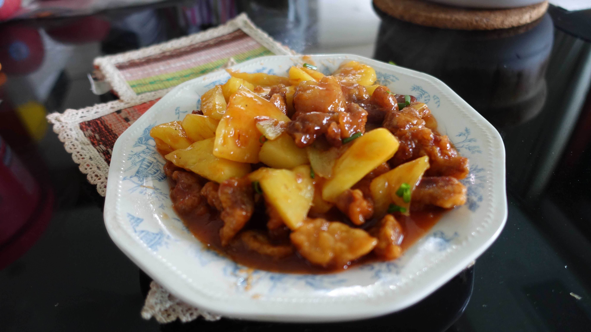

前言
菠萝上市了，那么就结合时令蔬菜做一顿菠萝咕噜肉吧！
材料
- 夹心肉（梅花肉最好，里脊肉也可）200g
- 菠萝200g（事实上多少还真无所谓，反正都水果都能吃掉）
- 酱汁
- 糖30g-
- 白醋30g
- 番茄酱30g
- 清水20g
- 淀粉5g
步骤
- 夹心肉切成两个指节并拢大小的肉片，加入料酒适量，盐3g，生抽5g，腌制15分钟
- 菠萝切片切成能用牙签戳起来吃的大小，用盐水浸泡备用。
- 接下来调制酱汁，先放番茄酱和白醋，清水，淀粉。然后试下味，再加糖直到口味适合为止。
- 另外拿一个碗，放入一个鸡蛋，50g红薯粉/玉米淀粉/淀粉（口味逐渐下降）,搅拌均匀到不出现单独粉结块。
- 将肉去除，用厨房纸巾擦干，放进上一步做的鸡蛋浆里面，拌匀。
- 热油锅（如果不想费油的话可以把油倒平底锅里然后斜过来煎，或者用雪平锅这样的小汤锅），热到放入面糊出现小泡泡（不是很大）为止。放入肉块炸至金黄，然后捞出沥干。等1分钟，再次放入开大火复炸（第一次炸完后肉中会有一部分水分跑出来弄潮炸衣）
- 倒出锅里大部分油，留点底油。加入菠萝和酱汁翻炒到出现小型气泡，然后加入酥肉，炒匀出锅。
DEMO
